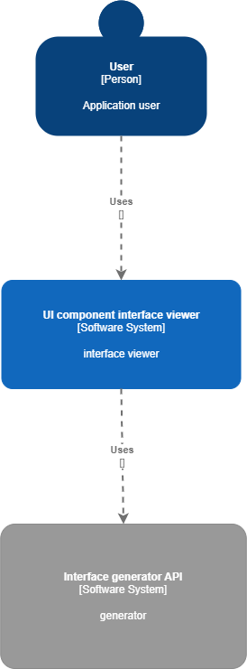

2. General application architecture
The application is divided into two parts:
- the ui interface where the user has access
- the API which is called when the user submits a request
The ui consists of a formular for the user where they may type in the description of a Web interface by using a set of controlled language constructs based on which a new page will be generated. The user will be able to access the new page by following the link provided after submitting the request.

Examples of descriptions using language constructs:
- Build a section with x images|videos and y paragraphs placed below|above|left|right.
- Build main section having a user profile with minimum 2 paragraph, 1 image and a submit button labeled "Edit" vertically|horizontally arranged.
2.1 Frontend
The frontend side of the project is made using the
React
library and contains 2 pages.
On the / path the implementation is straightforward, as the text from the formular will be sent in a
POST
request to the API server and a link will become available to lead the user to the newly generated interface template.

On the /:uuid path, the shown page will contain the generated interface with the specified components and the
required inputs for the user to finish setting the displayed information.
As an example, for the following description, there will be displayed a page like in the image below.
'Build a section with 2 images and 1 paragraph placed above'

* As a node, the positional property of the components will consider the previous component only.
Once the template is shown, the user will be able to edit the components data by clicking on the edit button from the corner of the element.

2.2 Backend
The backend side will be made using nodejs language with express library and will provide two API routes:
- /generateTemplate - a POST endpoint which will accept a text description that defines the componnets and their properties for the interface
- /generated/:uuid - a GET endpoint which will return the generated components for the template page
The API specifications can be found on swagger accessed here.
The parser will detect certain keywords that will represent different components, placements, colors or other important factors.
The components will be divided in two categories:
- wrappers, with keywords like: container, div, wrapper, box, header, footer, section, table
- final components, for example: input, button, paragraph, image, video, title
The placements will consider the previous component as the anchor when deciding the position, and these may be:
above,
right,
below,
left.
Or they will be absolute positions with keywors like:
top,
end,
bottom,
start,
side.
Or as a way of arranging the components in a wrapper:
row,
column,.
The colors will be available as regular words, e.g. red, green, light-blue, teal, purple, etc.
There're also the control keywords: build.